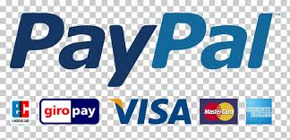

PayPal es la plataforma de pagos que se utiliza de forma más habitual al realizar compras online. Un sistema muy seguro del que te vamos a explicar su funcionamiento.

Muchos usuarios, a la hora de realizar sus pagos vía web, habrán encontrado el logotipo de PayPal al lado de las tarjetas de crédito. Pero seguramente no todos saben qué es exactamente PayPal. Tiempo atrás existía la percepción de que realizar pagos por Internet era demasiado inseguro. Aunque a día de hoy, esta idea aún está presente en la mente de algunos usuarios, PayPal ha permitido erradicar estos miedos y crear una forma fácil y segura de pagar y recibir pagos online sin compartir los datos bancarios. Estos datos bancarios o información financiera estarán a salvo gracias a un sistema de encriptación automática y a avanzados sistemas contra el fraude que la empresa se encarga de actualizar continuamente.
link directo a Paypal